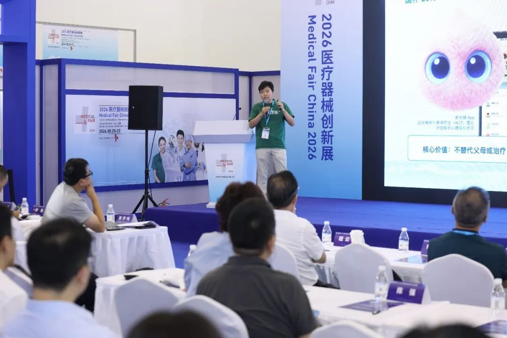
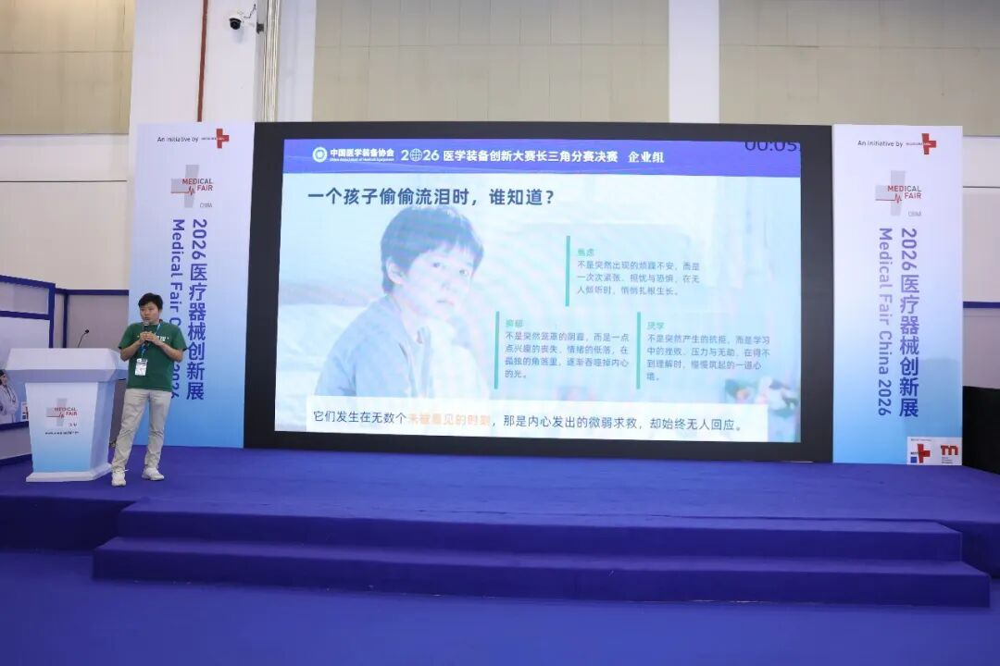
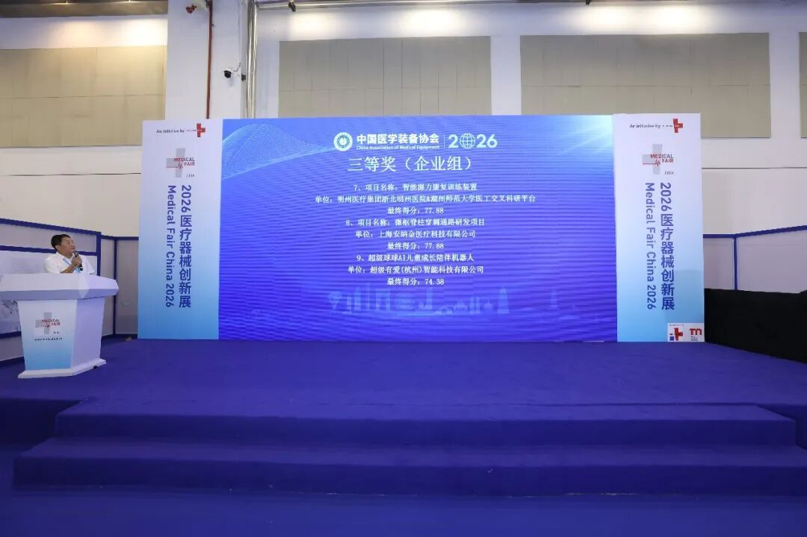
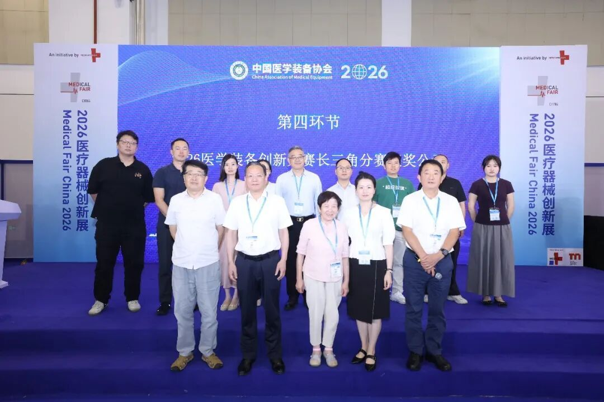
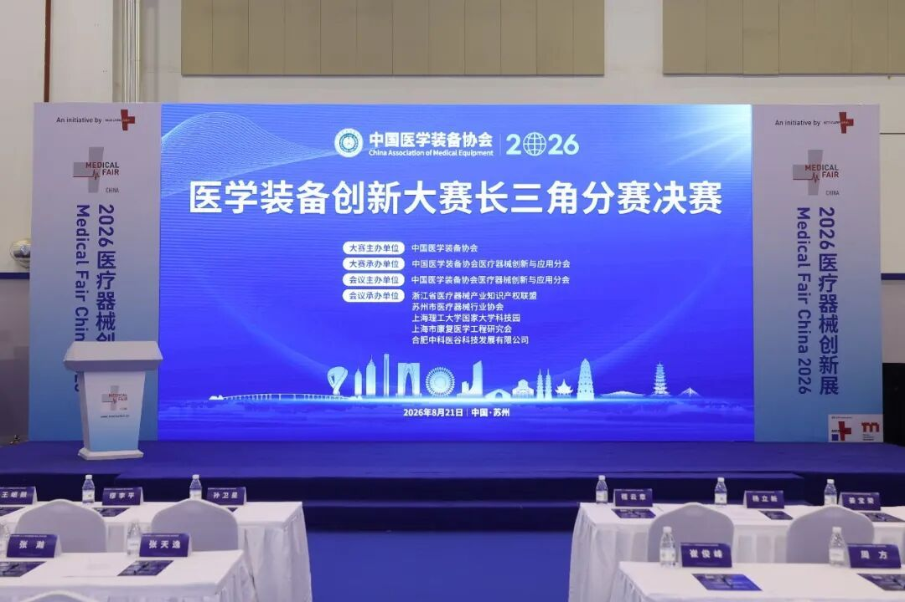

捷报传来，载誉赛场！超级球球实力惊艳全场！
在千余个初赛项目中大浪淘沙成功晋级，又与200+优质决赛项目同台竞技、强强比拼，最终实力突围，斩获医学装备创新大赛长三角分赛决赛三等奖！
热烈祝贺！在2026年医学装备创新大赛长三角分赛决赛现场，超级有爱智能科技重磅打造的畅销产品【超级球球】凭借专业的心理智能创新能力、贴合大众需求的服务价值以及差异化的心理场景创新设计，在激烈的现场角逐中过关斩将，成功斩获赛事三等奖荣誉！

本次2026年医学装备创新大赛聚焦大健康领域创新，覆盖心理服务、健康配套、智能创新等多元赛道，行业认可度高、参赛质量顶尖，整体竞争极为激烈。大赛初赛阶段汇聚全国1000余个创新项目同台比拼，经由行业专家多轮严苛初审、价值核验与能力测评，层层筛选淘汰后，优质创新项目成功晋级长三角分赛决赛。

本次长三角分赛决赛高手云集，200余支优质创新项目同台竞技，均为大健康领域极具实力的创新成果，角逐氛围白热化。超级球球能够在众多竞品中强势突围、斩获三等奖，核心得益于产品专属的有爱心理模型赋能与扎实的落地服务能力。

依托自研有爱心理模型，超级球球搭建了专业化、轻量化、高适配的智能心理服务体系，具备精准情绪识别、科学心理陪伴、专业心理科普、正向情绪引导等核心能力。与市面绝大多数以早教、知识问答、娱乐讲故事为核心的儿童AI设备，仅调用通用大模型基础对话不同；超级球球底层由资深儿童心理专家在内的5个博士，通过6年研发、9代迭代打造专业心理疗愈AI模型，完整复刻心理咨询师「倾听-共情-正向引导-正向强化」工作流，搭配毛绒触摸、动态眼神的实体情感交互与长期专属记忆，产品聚焦儿童情绪与心理健康需求、正向性格养成。所以超级球球不是单纯的学习玩具，而是青少年一个值得信赖、全能成长陪伴伙伴。
此外，超级球球还在特殊心理帮扶场景，如孤独症陪伴干预、抑郁症情绪疏导、青少年积极心理、正向引导等细场景落地应用，积累了成熟的服务经验，收获了良好的用户反馈与实际落地效果，凭借真实的社会服务价值获得评审团高度认可。

从1000+初赛项目的大浪淘沙，到200+决赛强者中稳稳摘奖，这份荣誉来之不易。这不仅是赛事组委会、行业专家对超级球球产品创新、技术实力、场景价值的高度肯定，更是市场与用户对产品体验的真实认可，背后是研发团队反复打磨、持续迭代的坚守与付出。
深耕心理智能创新，匠心打磨暖心产品！超级球球是一款聚焦大众心理健康服务的智能产品，本次凭借心理创新成果入围大健康创新赛事赛道。产品始终立足用户心理需求，依托自研有爱心理模型，持续优化情绪疏导、心理陪伴、心理科普、心理干预辅助等核心功能，专注解决大众日常情绪内耗、特殊群体心理陪伴缺失等痛点，以轻量化、智能化、温情化的服务模式，填补普惠性心理服务缺口，为不同人群提供暖心、专业、可持续的智能心理帮扶。
荣誉加冕，不负初心；步履不停，未来可期。

此次获奖既是认可，更是砥砺前行的动力。未来，我们将以此为契机，持续深耕技术创新、打磨产品品质、优化服务体系，以更强劲的实力、更优质的产品回馈行业与客户的信任与支持！
每一份荣誉，都是全新的起点！感谢大赛的认可，感恩广大用户与合作伙伴一路相伴。超级球球将继续深耕打磨、持续精进，不负热爱、不负期待！